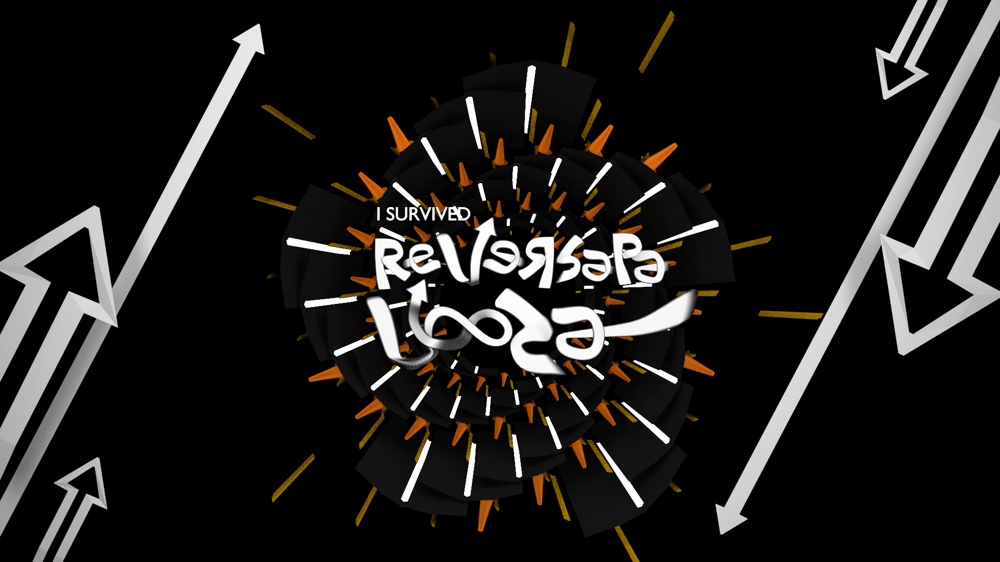

Recent Works
Hobby 3D Projects
Everything on this page was modeled, textured, and rendered in Blender and Cycles, and animations were compiled with VLC.
Some of the models below can be explored for their topology on my Sketchfab page, and you can view the same renders on my ArtStation.
Music Department Logo Variations

This has a dedicated page.
2013-2014
Hatsune Miku Character Model


The Miku that's standing in a power pose was my first ever attempt at a character model. The second attempt (seen above with spotlights) featured much cleaner geometry and better topology, after I made the painful decision to start over. I'm glad I did.
2010-2013
Reversapalooza
In high school driver's ed, we had a dedicated labyrinth of concrete we called "The Range", and one unit was to perform all driving functions in reverse. I took the teachers' quirky name for this day and made a poster.
2013
Fifth-Generation iPod Touch

I love Apple products, and I thought the iPod touch was so beautiful that I had to model and animate it. I can't find the finished render, but you can see the animation on Sketchfab. The screenshot was taken directly from Apple's website.
2011
Futuristic Sink


I loved to invent when I was younger, so I came up with this fashionable sink with lots of doodads. I believe this was one of my first animations. I was blown away by using HDRis to light my scene.
2012
Futuristic Void Concept


This concept was made to explore the lack of gravity possible in 3D spaces, with the intimacy of a small group setting. I also toyed around with shaders to make the granite stools.
Spring 2020